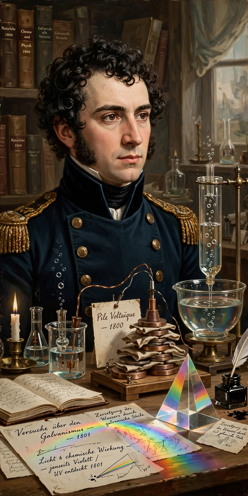

Johann Wilhelm Ritter
Johann Wilhelm Ritter (16 December 1776 – 23 January 1810) was a German chemist, physicist and philosopher. He is best known for discovering ultraviolet radiation in 1801 and for his foundational work in electrochemistry, including the construction of one of the first dry-pile batteries and early experiments in electrolysis.

| Johann Wilhelm Ritter | |
|---|---|
| Born | 16 December 1776, Samitz (Zamienice), Silesia |
| Died | 23 January 1810 (aged 33), Munich |
| Known for | Discovery of ultraviolet radiation; electrochemistry |
| Fields | Physics, chemistry, natural philosophy |
Life and work
Ritter was born in Samitz, Silesia, and trained as an apothecary before studying medicine at the University of Jena, where he fell in with the circle of German Romantic natural philosophers. Inspired by Luigi Galvani's experiments on animal electricity, he conducted extensive — and physically damaging — experiments on his own body, applying electric currents to his sense organs.
In 1801, building on William Herschel's discovery of infrared radiation the previous year, Ritter showed that silver chloride darkened even faster in an invisible region beyond the violet end of the visible spectrum, demonstrating the existence of what he called "deoxidising rays" — now known as ultraviolet radiation. In 1802 he constructed a dry voltaic pile, and in 1803 built an early form of storage battery (accumulator). He also performed early electrolysis experiments on water.
Ritter spent his final years in Munich under the patronage of the Bavarian Academy of Sciences. Worn out by poverty, overwork, and his self-experiments, he died in 1810 at the age of thirty-three.